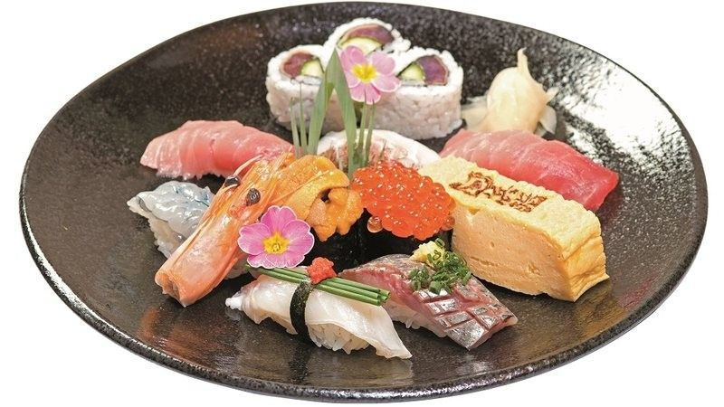

Our signature
Nigiri Sushi Sets
にぎり寿司
Hand-pressed one piece at a time by our chefs, with seasonal seafood. Sit at the counter to watch your sushi being made right in front of you.
- Hama Nigiri 浜にぎり¥2,000
- Hyakuju 百寿¥2,500
- Senju 千寿¥3,600
- Kaju 嘉寿¥4,500
Lunch (Mon–Sat 11:00–15:00, except public holidays): comes with chawanmushi (savory egg custard) and salad.
See all sushi